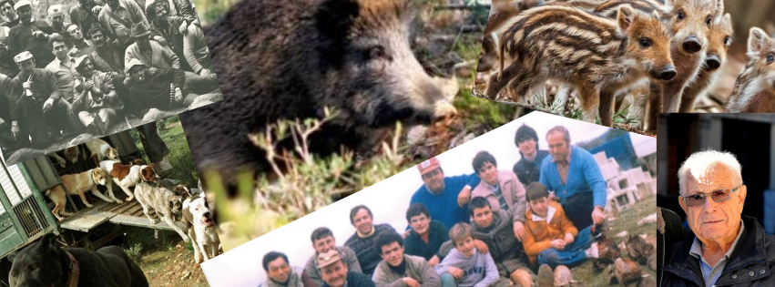
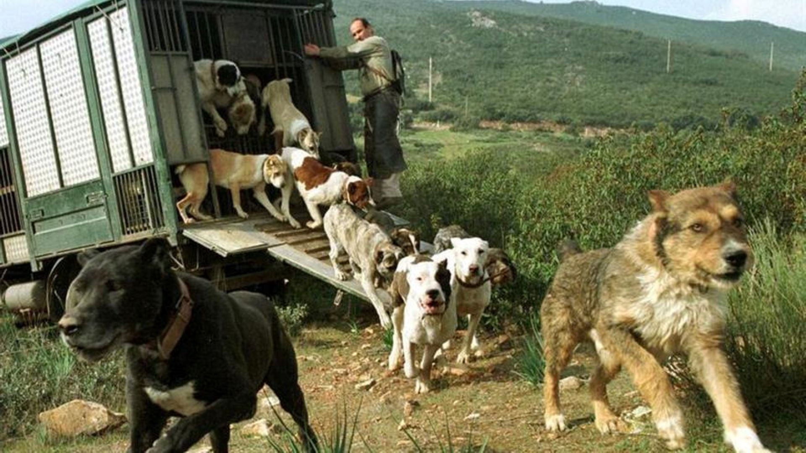

Peña Jabalí Hunters
Galería
La imagen y la actividad de Peña Jabalí Hunters.
Galería principal
Accede a nuestras galerías por temática.

JORNADAS Y LA PEÑA
Jornadas y La Peña
Actividad y momentos vinculados a las jornadas de la Peña.
Entrar en Jornadas y La PeñaVídeos
Una selección audiovisual de la actividad y los momentos de la Peña.
Los vídeos se incorporarán próximamente.
Galería histórica
Memoria y continuidad histórica de la Peña.

MEMORIA DE LA PEÑA
Antonino Macia Vicente
Fundador de Peña Jabalí de Almansa
Uno de los referentes de la historia de la Peña y de su continuidad hasta la actual Peña Jabalí Hunters.
Fotografía: Luis Bonete Piqueras · 2020 · Derechos de uso autorizados.
Ver historia